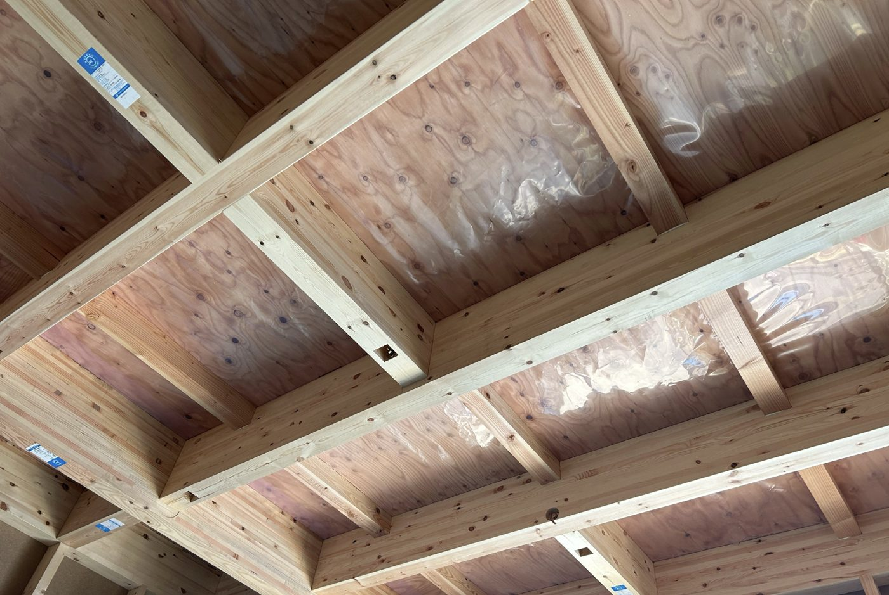
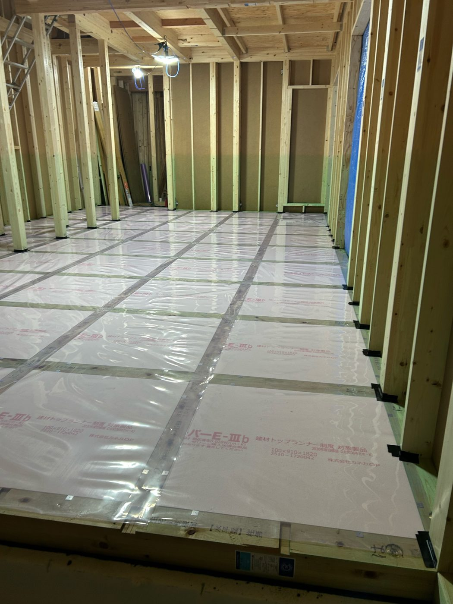
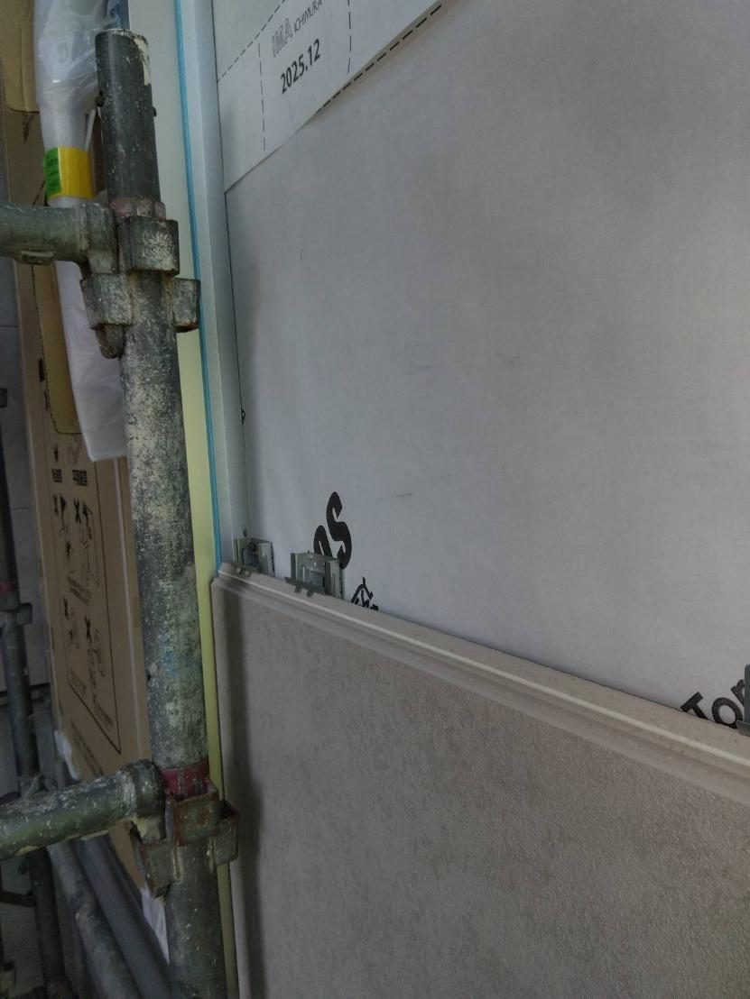

カタログ・設計値としては、どこにも欠点がない
数値の良し悪しと、壁内結露は別の問題
空気1kgあたりの水蒸気量
6.2℃・湿度61%
4.7℃・湿度74%
6.9℃・湿度63%
−1.6℃・湿度73%
冷たさの元がなくなるから
冬の間ずっと、壁の外側は冷やされ続ける
壁の中の腐朽は、住んでいて気づけない
クロス替えでは直せない構造の問題になっている
断熱等級・UA値・C値・耐震等級・制震ダンパー
壁の中に湿気を入れない手当てをしているかで決まる
木材・コンクリートの水分を飛ばす時間が惜しまれがち
気密シートの小さな穴は、工程上そのまま塞がれることがある
| JIS A 6930の区分 | 厚み | 透湿抵抗（水蒸気の通しにくさ） | 推奨される地域 |
|---|---|---|---|
| A種 | 0.1mm | 0.082 以上 | 一般地域 |
| B種 | 0.2mm | 0.144 以上（A種の約1.8倍） | 寒冷地 |
| LIFEX | 0.2mm | B種適合品（ジェイベック「ボーダー」） | 全国共通で採用 |
LIFEX標準仕様書：1階床・外壁・屋根・外気に接する天井の4か所すべてで「防湿気密シート t=0.2」。2階の張り出し床にも施工

薄いシートは、うっかり当たると穴が開きやすい
（サランラップくらいの薄さ）
当たっても、簡単には破れない
（クリアファイルくらいの厚み）

室内側のシートで止める
湿気が外から壁に入ろうとする
結露が起きても、濡れたまま閉じ込めない
濡れた瞬間にカビが生えることはない。拭いて換気すれば生えない。生えるのは、濡れたまま閉め切った状態が長く続いたとき。

湿り空気線図（恐怖③・④）：史幸工務店「ハイブリッド・エコ・ハートQ 住宅の科学③ 水分・湿度・空気線図・環境編」掲載の湿り空気線図（圧力101.325kPa）。①〜④の矢印と吹き出しは本資料で追記。点の位置はMagnus-Tetens近似式の計算値（約8.7g/kg・約12.0℃）に合わせて図上に配置
冬の屋外の気温・湿度（恐怖⑤）：気象庁「平年値（1991〜2020年）」1月の値（https://www.data.jma.go.jp/stats/etrn/、2026-10-05取得）。大阪 平均気温6.2℃・相対湿度61%・蒸気圧5.8hPa／米子 4.7℃・74%・6.3hPa／福岡 6.9℃・63%・6.4hPa／盛岡 −1.6℃・73%・4.0hPa。水蒸気量は蒸気圧から x=622e/(1013.25−e) で計算（大阪約3.6g/kg、米子約3.9g/kg、福岡約4.0g/kg、盛岡約2.5g/kg）
露点温度・水蒸気量の計算値（23℃・湿度50%→水蒸気約8.7g/kg・露点約12.0℃）：Magnus-Tetens近似式で飽和水蒸気圧を求め、大気圧101.325kPaとして算出した計算値。室内の温湿度は説明用の仮定条件で、実測値ではない
空気・水蒸気が動く3つの性質（温度差・気圧差・水蒸気量の差）：前回10/2研修「断熱×気密×換気」で説明した内容に準拠
壁の中の温度分布（恐怖⑥）：屋外0℃・室内23℃を仮定した考え方の模式図。実測・計算に基づくグラフではない
結露による耐震性能・断熱性能の低下と光熱費の増加（実害①）：佐古顧問の指導内容（2026-10-05定例）に基づく一般的な説明。具体的な低下率・金額の数字は使用していない
JIS A 6930（住宅用プラスチック系防湿フィルム）のA種・B種：A種＝厚み0.1mm・透湿抵抗0.082m²·s·Pa/ng以上、B種＝厚み0.2mm・透湿抵抗0.144m²·s·Pa/ng以上。市村「防湿気密シート モイストバリア」製品案内（2024-10-07、https://www.ichimura.co.jp/information/pdf/20241007.pdf）。A種＝一般地域推奨・B種＝寒冷地推奨はフクビ化学工業「バリアエース」製品ページ（https://www.fukuvi.co.jp/product/3/02/31）の記載。JIS原本は未確認
LIFEXの防湿気密シート t=0.2mm、施工箇所：LIFEX標準仕様書「断熱」欄（1階床・外壁・屋根・外気に接する天井の4か所で「防湿気密シート t=0.2」、2026-09-21確認）。製品はジェイベック「ボーダー」（LIFEX標準施工マニュアル第1版p26「防湿気密シート（ジェイベック：ボーダー）t=0.2を使用」）で、ジェイベック製品ページに「JIS A-6930住宅用プラスチック系防湿フィルム、寒冷地向けB種適合品」「0.2mm厚はJIS規格B種」と記載（http://www.jbeck.co.jp/products/kimitsu/border/index.html、2026-10-05確認）。矩計図の注記「防湿抵抗0.082m²·s·Pa/ng以上」は最低基準（A種相当）の表記。0.2mmを全国共通で使っていること、外気に接する床（2階の張り出し部分）にも張っていることはLIFEX本部に確認済み（2026-10-05）。矩計図の「外気に接する床」詳細には表記がない
夏型結露と通気層の役割：佐古顧問の指導内容（2026-10-05定例）。通気層だけで夏型結露が乾くと言い切れるかは未確認
床の仮張り→乾燥→剥がして断熱・防湿気密シート→本張りの工程：LIFEX標準施工マニュアル統合版 第1版（2026/08/11）p6「1階床合板仮張りとする（野地板・外壁面材施工後本締め）」、p12「1階床合板施工」（床下断熱材 押出法ポリスチレンフォーム3種t=100、気密フィルム ジェイベックボーダー10）。乾燥期間「約1週間」と目的（湿気で断熱材を傷めない）は2026-08-24中央建設様ショートMTGでの本部説明
壁の構成（恐怖⑥）：LIFEX標準矩計図1/30（更新日2025.12.22、2026-10-05徳田さん提示）の外壁表記「サイディング／通気金具t=15／透湿防水シート／耐力面材ハイベストウッドt=9／吹付硬質ウレタンフォーム（A種3）t=95／ジェイベック（防湿気密シート）／PB t=12.5」に準拠
恐怖⑦のコップ、恐怖②・恐怖⑥・執念①-2・執念①-3の図：LIFEXのデザインで作成した説明用の図
施工写真（執念①-2・執念②-1・執念③）：LIFEX現場の施工写真（徳田さん提供、2026-10-05）
恐怖②の家と壁の図：一般的な高断熱住宅のイメージとして作成した説明図。LIFEXの仕様を表すものではない
断熱等級6・UA値0.46・C値0.5という基本仕様：前回10/2研修「断熱×気密×換気」教科書・参考書に準拠（社内資料LIFEX公式初回セミナースライド20260521・LIFEX_話法マニュアル）
想定QA「シロアリ対策」の注釈（加圧注入の防蟻処理）：LIFEX本部の営業知見（2026-10-02共有）。メーカー資料等での裏付けは未確認